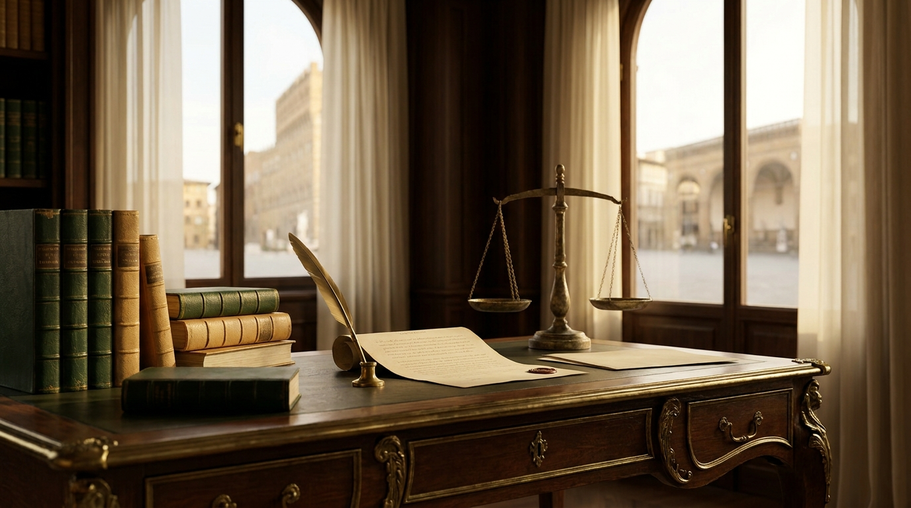

Causa persa e responsabilità dell'avvocato: quando scatta il risarcimento
Perdere una causa non significa, di per sé, che l'avvocato debba risarcire il cliente. La responsabilità del difensore nasce solo se una difesa diligente avrebbe potuto cambiare l'esito. La Cassazione (ord. n. 5683/2021) ribadisce il metodo: il giudizio controfattuale e il doppio onere probatorio a carico del cliente. Un confine spesso frainteso, sia da chi assiste sia da chi viene assistito.

Quando l'avvocato risponde dei danni
Il rapporto tra cliente e avvocato si inquadra nel contratto d'opera intellettuale, disciplinato dagli artt. 2229 e seguenti del Codice civile. La prestazione del difensore è un'obbligazione di mezzi, non di risultato: l'avvocato si impegna a difendere con diligenza, competenza e prudenza, non a vincere la causa.
Il parametro di valutazione è quello dell'art. 1176, comma 2, c.c.: la diligenza richiesta è quella del professionista qualificato, calibrata sulla natura dell'attività esercitata. Ne deriva un principio essenziale: la soccombenza, da sola, non genera responsabilità. L'esito sfavorevole può dipendere dal merito della posizione, dall'incertezza del diritto, da fattori esterni alla condotta del legale.
Il giudizio controfattuale e il nesso causale
La Corte di Cassazione, con l'ordinanza n. 5683/2021, conferma il metodo del cosiddetto giudizio controfattuale. In concreto, il giudice deve chiedersi: se l'avvocato avesse agito con la dovuta diligenza, l'esito sarebbe stato ragionevolmente diverso?
La risposta richiede una valutazione prognostica sulla probabilità di vittoria. Non basta dimostrare un errore del difensore — un termine non rispettato, un'eccezione non sollevata, un atto redatto male. Occorre provare che, senza quell'errore, il cliente avrebbe verosimilmente ottenuto un risultato favorevole.
Se la causa era comunque persa nel merito, l'errore del legale resta privo di conseguenze risarcibili: manca il nesso causale tra la condotta e il danno lamentato.
Una precisazione necessaria sulla perdita di chance. La giurisprudenza distingue il danno da mancato raggiungimento del risultato — quando si prova che l'esito favorevole era altamente probabile — dal danno da perdita di chance, cioè la perdita della concreta possibilità di ottenere quel risultato. Si tratta di profili dai contorni non univoci, sui quali la riflessione giurisprudenziale resta articolata: la chance risarcibile deve essere seria, apprezzabile e statisticamente significativa, non una mera aspettativa generica.
L'onere della prova a carico del cliente
Il quadro probatorio è il punto più delicato. Sul cliente che agisce per il risarcimento gravano due oneri distinti:
- La violazione della diligenza professionale: dimostrare che la condotta del legale si è discostata dallo standard dell'art. 1176, comma 2, c.c.
- Il nesso causale: dimostrare che quella violazione ha inciso sull'esito, ossia che una difesa corretta avrebbe condotto, con ragionevole probabilità, a un risultato diverso.
Il secondo onere è quello che più spesso fa naufragare le azioni di responsabilità. Provare la diligenza mancata può essere agevole; provare che proprio quella mancanza ha determinato la sconfitta è molto più complesso, perché impone una ricostruzione ipotetica del processo che non c'è stato.
Implicazioni pratiche
Per l'avvocato, il messaggio è duplice. La diligenza va documentata: pareri scritti, comunicazioni con il cliente, annotazioni sulle scelte difensive e sui rischi rappresentati costituiscono la prima difesa in un eventuale giudizio di responsabilità. La trasparenza informativa verso l'assistito — soprattutto sulle probabilità di successo e sulle alternative — riduce sensibilmente l'esposizione.
Per il cliente, l'aspettativa va calibrata. Un esito negativo non equivale automaticamente a un errore risarcibile. Prima di promuovere un'azione di responsabilità è necessaria una valutazione tecnica autonoma su due elementi: l'effettiva violazione della diligenza e la concreta probabilità che la causa, condotta diversamente, sarebbe stata vinta.
Cosa fare in concreto
- Documentare ogni scelta difensiva: il professionista conservi pareri, mail e annotazioni che attestino l'informazione resa al cliente e le valutazioni compiute.
- Informare per iscritto sui rischi: rappresentare al cliente le probabilità di successo e le alternative riduce contestazioni future.
- Valutare il nesso causale prima di agire: chi intende contestare l'operato del legale faccia esaminare da un terzo se l'esito sarebbe stato realisticamente diverso.
- Monitorare i termini di prescrizione: è opportuno verificare tempestivamente i termini per non incorrere nella decadenza dell'azione.
- Acquisire il fascicolo completo: ricostruire l'intera vicenda processuale è il presupposto di ogni valutazione attendibile.
In sintesi: la responsabilità del difensore non discende dalla sconfitta, ma dalla dimostrazione che una difesa corretta avrebbe potuto evitarla. Un confine netto, che protegge il professionista diligente e impegna il cliente a un'analisi rigorosa prima del contenzioso.
---
Contributo informativo a cura di Tamburro & Partners Avvocati - Avv. Giuseppe Tamburro. Non costituisce parere legale.
Ogni contratto ha il suo equilibrio.
Se vuoi una revisione delle clausole o una redazione su misura, scrivi allo studio. Ti rispondiamo entro un giorno lavorativo.